CODING AGENTS AS PIXEL WORLD MODELS
traex/GPT-6.1-Sol · 0121
点击播放 · 原生 RGB 像素
此结果可播放，但该运行尚未通过最终提交审核。页面展示不代表评测通过。
逐轮保存的候选
回放视频、检查图与代码变化。
每份候选均可单独播放。实际图片检查记录在下方工具轨迹中。
候选 01播放与检查图
点击播放 · 原生 RGB 像素

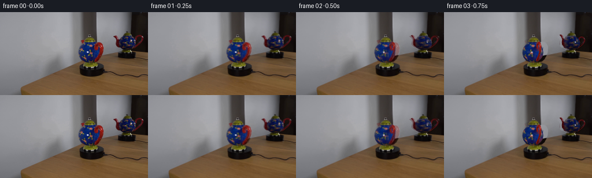
展开代码变化
--- 上一保存版本
+++ 本次保存版本
@@ -0,0 +1,167 @@
+from pathlib import Path
+import numpy as np
+from PIL import Image, ImageDraw, ImageFilter
+import cv2
+from scipy.ndimage import distance_transform_edt, gaussian_filter
+import artifact_io
+
+ROOT=Path(__file__).resolve().parent
+S=4
+W,H=256*S,144*S
+original=np.array(Image.open(ROOT/'first_frame.png').convert('RGB'))
+im=cv2.resize(original,(W,H),interpolation=cv2.INTER_CUBIC).astype(np.float32)
+Y,X=np.mgrid[0:H,0:W].astype(np.float32); X=(X+.5)/S-.5;Y=(Y+.5)/S-.5
+E=np.deg2rad(19); OFF=np.deg2rad(145)
+
+def poly(points):
+ a=Image.new('L',(W,H));ImageDraw.Draw(a).polygon([(int((x+.5)*S),int((y+.5)*S)) for x,y in points], fill=255)
+ return np.array(a,dtype=np.float32)/255
+
+mainbody=poly([(146,51),(162,51),(164,54),(168,58),(170,63),(171,70),(170,76),(166,82),(161,86),(155,87),(148,86),(141,83),(137,78),(135.2,72),(135.3,66),(137,61),(141,56)])
+refbody=poly([(210,42),(228,42),(232,46),(235,52),(234,58),(230,63),(224,65),(217,66),(211,64),(207,61),(204,55),(205,50),(208,45)])
+# Visible accessory silhouettes, taken exclusively from the input photograph.
+mhandle=poly([(161.5,60),(162.5,56),(165,53),(168,51.8),(172.5,52.1),(176.3,55.4),(178.5,60),(178.2,68),(175.8,75),(172.8,80),(167.6,85),(163.4,86),(162.5,83.5),(166.3,78),(169.8,72),(171,65),(170,60),(168.5,58),(168,62),(166.5,65),(163.2,65.4)])
+mspout=poly([(140.2,48.3),(145,47.3),(148,48.1),(148,52),(145.2,54.5),(142.5,54),(142,51.5)])
+rhandle=poly([(232.1,47),(233.5,43),(237,40),(240,39),(244,40),(247,42.5),(247.8,46),(246,51.5),(242.7,56),(238,60),(232,64),(229,65),(228.5,63),(233.5,59.5),(238,56),(242,52),(244.5,46.5),(244,43.5),(241.5,42),(239,43),(236,46),(235,50)])
+rspout=poly([(196.2,41.7),(199,40.6),(202.4,42),(204.3,45),(206,49),(209,51),(210,57),(208,61),(204,61),(201.2,58),(200.8,53),(201.5,49),(199.7,44.8)])
+# Remove residual background colors from accessory masks by red chroma.
+red=np.clip((im[:,:,0]-np.maximum(im[:,:,1],im[:,:,2])-13)/19,0,1)
+mhandle*=red;mspout*=red;rhandle*=red;rspout*=red
+
+# Recover unobstructed wall and table from the nearby stationary photograph.
+col=np.mean(original[23:30],axis=0).astype(np.float32)
+wall=np.repeat(cv2.resize(col[None],(W,1),interpolation=cv2.INTER_LINEAR),H,axis=0)
+wall-=np.maximum(Y-26,0)[...,None]*np.where(X[...,None]<140,.14,np.where(X[...,None]<168,.12,.30))
+# The dark frame of the mirror continues vertically behind the moving object.
+wall=np.clip(wall,0,255)
+lookup_y=np.clip(Y+25,0,143).astype(np.float32)
+table=cv2.remap(original.astype(np.float32),X.astype(np.float32),lookup_y,cv2.INTER_LINEAR,borderMode=cv2.BORDER_REPLICATE)
+# Adjust table sampling to match the slightly lighter wood at the rear of the desk.
+table*=.94
+line=np.where(X<167,126.2-.300*X,np.where(X<227,113.6-.225*X,64.5+.02*X))
+a=np.clip((Y-line+.4)/.8,0,1)[...,None]
+clean=wall*(1-a)+table*a
+# Keep the turntable, the base, the lid and the mirror itself absolutely still.
+remove=np.clip(mainbody+refbody+mhandle+mspout+rhandle+rspout,0,1)
+remove=cv2.dilate(remove,np.ones((7,7),np.uint8))
+remove=gaussian_filter(remove,.6)
+bg=im*(1-remove[...,None])+clean*remove[...,None]
+
+
+def texture(mask,accessory,cx,cy,rx,ry):
+ small=cv2.resize(mask,(256,144),interpolation=cv2.INTER_AREA)>.35
+ bad=(cv2.resize(accessory,(256,144),interpolation=cv2.INTER_AREA)>.1)&small
+ # Gloss reflections belong to the room, not to the painted rotating surface.
+ bad|=(original.min(axis=2)>115)&small
+ tex=cv2.inpaint(original,np.uint8(bad)*255,3,cv2.INPAINT_TELEA).astype(np.float32)
+ nearest=distance_transform_edt(~small,return_distances=False,return_indices=True)
+ tex=tex[nearest[0],nearest[1]]
+ yy,xx=np.mgrid[:144,:256]
+ nx=(xx-cx)/rx; ny=(cy-yy)/ry
+ depth=np.sqrt(np.maximum(0,1-nx*nx-ny*ny))
+ shade=np.clip(.70+.30*depth-.10*nx,.46,1.08)
+ tex/=shade[...,None]
+ return tex
+mt=texture(mainbody,mhandle,153.5,69.4,18,18)
+rt=texture(refbody,rhandle+rspout,219.8,53.7,15.5,14.2)
+rt*=np.array([1.18,1.40,1.46])
+
+
+def sample(tex,u,v):
+ return cv2.remap(tex,u.astype(np.float32),v.astype(np.float32),cv2.INTER_LINEAR,borderMode=cv2.BORDER_REPLICATE)
+
+
+def body(cx,cy,rx,ry,mask,ang,isref):
+ nx=(X-cx)/rx; yy=(cy-Y)/ry
+ dc=np.sqrt(np.maximum(0,1-nx*nx-yy*yy))
+ zw=yy*np.cos(E)+dc*np.sin(E)
+ dw=dc*np.cos(E)-yy*np.sin(E)
+ lon=np.arctan2(nx,dw)
+ world=OFF-lon+ang if isref else lon+ang
+ radius=np.sqrt(np.maximum(0,1-zw*zw))
+ lm=world; lr=OFF-world
+ def uv(theta,cx,cy,rx,ry):
+ return cx+rx*radius*np.sin(theta),cy-ry*(zw*np.cos(E)-radius*np.cos(theta)*np.sin(E))
+ um,vm=uv(lm,153.5,69.4,18,18)
+ ur,vr=uv(lr,219.8,53.7,15.5,14.2)
+ a=sample(mt,um,vm); b=sample(rt,ur,vr)
+ wm=np.maximum(.035,np.cos(lm))**4;wr=np.maximum(.035,np.cos(lr))**4
+ color=(a*wm[...,None]+b*wr[...,None])/(wm+wr)[...,None]
+ shade=np.clip(.70+.30*dc-.10*nx,.46,1.08)
+ color*=shade[...,None]
+ if isref:color/=np.array([1.18,1.40,1.46])
+ # The small, room-fixed white specular spot remains in place as the glaze turns.
+ if isref:
+ highlight=np.exp(-(((X-226.6)/.85)**4+((Y-51.7)/1.1)**4)/2)*.8
+ else:
+ highlight=np.exp(-(((X-151.6)/1.15)**4+((Y-69.1)/.9)**4)/2)*.94
+ color=color*(1-highlight[...,None])+np.array([234,234,234])*highlight[...,None]
+ return color,mask,dc*rx
+
+
+def accessory(srcmask,cx,cy,theta0,theta,scale=1,origin=None):
+ # Inverse-project the source accessory into its vertical radial plane.
+ # Finite ceramic thickness keeps the handle visible when its plane is edge-on.
+ if origin is None: origin=(cx,cy)
+ scx,scy=origin
+ s0=np.sin(theta0); st=np.sin(theta)
+ k=st/s0*scale
+ if abs(k)<.085: k=np.copysign(.085,k if k else 1)
+ u=scx+(X-cx)/k
+ radial=(u-scx)/s0
+ v=scy+(Y-cy)/scale-radial*(np.cos(theta0)-np.cos(theta))*np.sin(E)
+ srcu=(u+.5)*S-.5;srcv=(v+.5)*S-.5
+ alpha=sample(srcmask,srcu,srcv)
+ color=sample(im,srcu,srcv)
+ # Correct for the change of light on the red ceramic, retaining photographic details.
+ gain=.93+.12*np.cos(theta-.3)
+ color=color*gain
+ depth=radial*np.cos(theta)*scale+1.3*scale
+ return color,alpha,depth
+
+
+def render(angle,i):
+ a=np.deg2rad(angle)
+ out=bg.copy()
+ # Opaque, depth-sorted teapot parts in each of the two optical views.
+ for ref,cx,cy,rx,ry,mask in [(False,153.5,69.4,18,18,mainbody),(True,219.8,53.7,15.5,14.2,refbody)]:
+ color,ba,bd=body(cx,cy,rx,ry,mask,a,ref)
+ parts=[(color,ba,bd)]
+ if not ref:
+ theta=np.deg2rad(45)-a
+ parts.append(accessory(mhandle,cx,cy,np.deg2rad(45),theta))
+ # The complete spout is reconstructed from the unobstructed mirrored view.
+ sp=accessory(rspout,cx,cy,np.deg2rad(-80),theta+np.pi,18/15.5,(219.8,53.7))
+ sp=(sp[0]*np.array([1.16,1.14,1.08]),sp[1],sp[2])
+ parts.append(sp)
+ else:
+ theta=np.deg2rad(100)+a
+ parts.append(accessory(rhandle,cx,cy,np.deg2rad(100),theta))
+ parts.append(accessory(rspout,cx,cy,np.deg2rad(-80),theta-np.pi))
+ # Render body first, then accessory with camera-depth occlusion.
+ out=out*(1-ba[...,None])+color*ba[...,None]
+ for pc,pa,pd in parts[1:]:
+ vis=np.clip((pd-bd+.15)*2,0,1)
+ alpha=pa*(1-ba+ba*vis)
+ out=out*(1-alpha[...,None])+pc*alpha[...,None]
+ # Overlay invariant lid/foot pixels after any body-edge reconstruction.
+ keep=poly([(149,38),(160,38),(160,43),(165,48),(165,50.9),(145,50.9),(145,47),(149,43)])
+ keep+=poly([(145,87),(163,87),(168,92.5),(167,94.5),(145,95),(143,92.5)])
+ keep+=poly([(216,32),(222,32),(222,35.5),(228,39),(230,42),(206,42),(208,38),(216,35.5)])
+ keep+=poly([(214,66),(225,66),(229,69),(228,71),(210,71),(209,69)])
+ keep=np.clip(keep,0,1)
+ # Only reinstate the actual ceramic, avoiding the small surrounding background.
+ ceramic=((im[:,:,1]>im[:,:,2]*1.25)&(im[:,:,0]>im[:,:,2]*1.15))|((Y<44)&(X>151)&(X<159))|((Y<37)&(X>217)&(X<222))
+ keep*=ceramic
+ out=out*(1-keep[...,None])+im*keep[...,None]
+ # Short continuity bridge from the exact observed first frame to the 3-D surface.
+ if i<3:
+ t=i/3
+ out=out*t+im*(1-t)
+ return np.uint8(np.clip(cv2.resize(out,(256,144),interpolation=cv2.INTER_AREA),0,255))
+
+frames=[original]
+for i in range(1,20):
+ frames.append(render(i*7.0,i))
+frames=np.stack(frames).astype(np.uint8)
+artifact_io.save(frames,ROOT)
候选 02播放与检查图
点击播放 · 原生 RGB 像素

展开代码变化
--- 上一保存版本
+++ 本次保存版本
@@ -31,13 +31,14 @@
# Recover unobstructed wall and table from the nearby stationary photograph.
col=np.mean(original[23:30],axis=0).astype(np.float32)
wall=np.repeat(cv2.resize(col[None],(W,1),interpolation=cv2.INTER_LINEAR),H,axis=0)
-wall-=np.maximum(Y-26,0)[...,None]*np.where(X[...,None]<140,.14,np.where(X[...,None]<168,.12,.30))
+wall-=np.maximum(Y-26,0)[...,None]*np.where(X[...,None]<140,.14,np.where(X[...,None]<168,.12,.68))
# The dark frame of the mirror continues vertically behind the moving object.
wall=np.clip(wall,0,255)
-lookup_y=np.clip(Y+25,0,143).astype(np.float32)
-table=cv2.remap(original.astype(np.float32),X.astype(np.float32),lookup_y,cv2.INTER_LINEAR,borderMode=cv2.BORDER_REPLICATE)
+lookup_y=np.clip(Y+np.where(X<190,4,10),0,143).astype(np.float32)
+lookup_x=np.clip(X+np.where(X<190,43,35),0,252).astype(np.float32)
+table=cv2.remap(original.astype(np.float32),lookup_x,lookup_y,cv2.INTER_LINEAR,borderMode=cv2.BORDER_REPLICATE)
# Adjust table sampling to match the slightly lighter wood at the rear of the desk.
-table*=.94
+table*=1.00
line=np.where(X<167,126.2-.300*X,np.where(X<227,113.6-.225*X,64.5+.02*X))
a=np.clip((Y-line+.4)/.8,0,1)[...,None]
clean=wall*(1-a)+table*a
@@ -51,6 +52,8 @@
def texture(mask,accessory,cx,cy,rx,ry):
small=cv2.resize(mask,(256,144),interpolation=cv2.INTER_AREA)>.35
bad=(cv2.resize(accessory,(256,144),interpolation=cv2.INTER_AREA)>.1)&small
+ bad |= (original[:,:,0]>original[:,:,1]*1.8)&(original[:,:,0]>original[:,:,2]*1.5)&small
+ bad=cv2.dilate(np.uint8(bad),np.ones((3,3),np.uint8)).astype(bool)
# Gloss reflections belong to the room, not to the painted rotating surface.
bad|=(original.min(axis=2)>115)&small
tex=cv2.inpaint(original,np.uint8(bad)*255,3,cv2.INPAINT_TELEA).astype(np.float32)
候选 03播放与检查图
点击播放 · 原生 RGB 像素
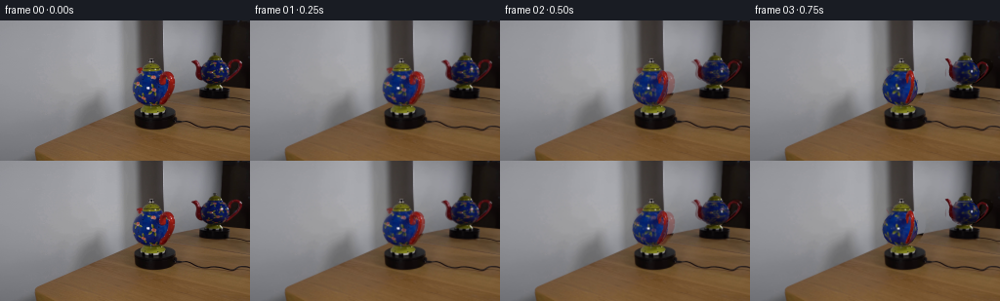
展开代码变化
--- 上一保存版本
+++ 本次保存版本
@@ -25,6 +25,7 @@
rhandle=poly([(232.1,47),(233.5,43),(237,40),(240,39),(244,40),(247,42.5),(247.8,46),(246,51.5),(242.7,56),(238,60),(232,64),(229,65),(228.5,63),(233.5,59.5),(238,56),(242,52),(244.5,46.5),(244,43.5),(241.5,42),(239,43),(236,46),(235,50)])
rspout=poly([(196.2,41.7),(199,40.6),(202.4,42),(204.3,45),(206,49),(209,51),(210,57),(208,61),(204,61),(201.2,58),(200.8,53),(201.5,49),(199.7,44.8)])
# Remove residual background colors from accessory masks by red chroma.
+rawaccess=np.clip(mhandle+mspout+rhandle+rspout,0,1)
red=np.clip((im[:,:,0]-np.maximum(im[:,:,1],im[:,:,2])-13)/19,0,1)
mhandle*=red;mspout*=red;rhandle*=red;rspout*=red
@@ -43,7 +44,7 @@
a=np.clip((Y-line+.4)/.8,0,1)[...,None]
clean=wall*(1-a)+table*a
# Keep the turntable, the base, the lid and the mirror itself absolutely still.
-remove=np.clip(mainbody+refbody+mhandle+mspout+rhandle+rspout,0,1)
+remove=np.clip(mainbody+refbody+rawaccess,0,1)
remove=cv2.dilate(remove,np.ones((7,7),np.uint8))
remove=gaussian_filter(remove,.6)
bg=im*(1-remove[...,None])+clean*remove[...,None]
@@ -53,6 +54,8 @@
small=cv2.resize(mask,(256,144),interpolation=cv2.INTER_AREA)>.35
bad=(cv2.resize(accessory,(256,144),interpolation=cv2.INTER_AREA)>.1)&small
bad |= (original[:,:,0]>original[:,:,1]*1.8)&(original[:,:,0]>original[:,:,2]*1.5)&small
+ edge=distance_transform_edt(small)<2.5
+ bad|=edge&small&((original[:,:,2]<original[:,:,0]*1.2)|(original[:,:,2]<original[:,:,1]*1.12))
bad=cv2.dilate(np.uint8(bad),np.ones((3,3),np.uint8)).astype(bool)
# Gloss reflections belong to the room, not to the painted rotating surface.
bad|=(original.min(axis=2)>115)&small
@@ -168,3 +171,6 @@
frames.append(render(i*7.0,i))
frames=np.stack(frames).astype(np.uint8)
artifact_io.save(frames,ROOT)
+Image.fromarray(np.uint8(np.clip(mt,0,255))).save(ROOT/'.tmp/mt.png')
+Image.fromarray(np.uint8(np.clip(rt,0,255))).save(ROOT/'.tmp/rt.png')
+Image.fromarray(np.uint8(np.clip(cv2.resize(bg,(256,144)),0,255))).save(ROOT/'.tmp/bg.png')
候选 04播放与检查图
候选 05播放与检查图
点击播放 · 原生 RGB 像素

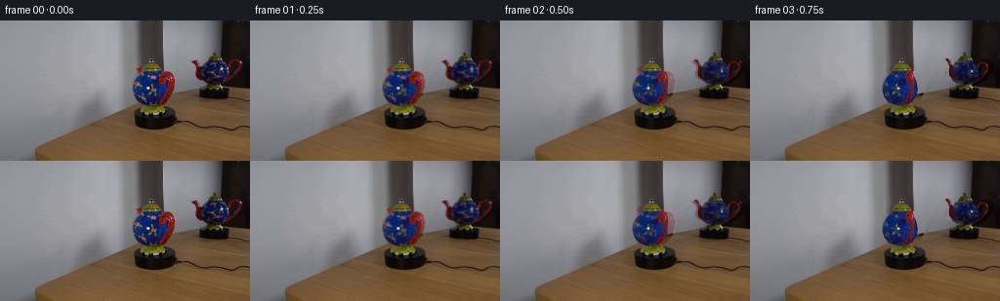
展开代码变化
--- 上一保存版本
+++ 本次保存版本
@@ -54,12 +54,14 @@
small=cv2.resize(mask,(256,144),interpolation=cv2.INTER_AREA)>.35
bad=(cv2.resize(accessory,(256,144),interpolation=cv2.INTER_AREA)>.1)&small
bad |= (original[:,:,0]>original[:,:,1]*1.8)&(original[:,:,0]>original[:,:,2]*1.5)&small
+ bad|=((original[:,:,0]>original[:,:,2]*1.25)&(original[:,:,0]>original[:,:,1]*1.25))&small
edge=distance_transform_edt(small)<2.5
bad|=edge&small&((original[:,:,2]<original[:,:,0]*1.2)|(original[:,:,2]<original[:,:,1]*1.12))
bad=cv2.dilate(np.uint8(bad),np.ones((3,3),np.uint8)).astype(bool)
# Gloss reflections belong to the room, not to the painted rotating surface.
bad|=(original.min(axis=2)>115)&small
tex=cv2.inpaint(original,np.uint8(bad)*255,3,cv2.INPAINT_TELEA).astype(np.float32)
+ small=cv2.erode(np.uint8(small),np.ones((3,3),np.uint8)).astype(bool)
nearest=distance_transform_edt(~small,return_distances=False,return_indices=True)
tex=tex[nearest[0],nearest[1]]
yy,xx=np.mgrid[:144,:256]
候选 06播放与检查图
点击播放 · 原生 RGB 像素
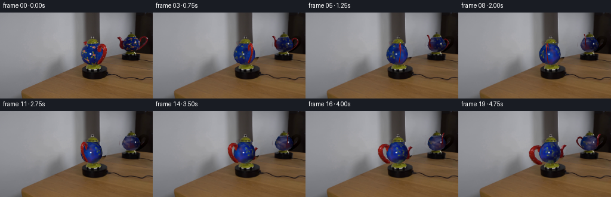
展开代码变化
--- 上一保存版本
+++ 本次保存版本
@@ -45,16 +45,19 @@
clean=wall*(1-a)+table*a
# Keep the turntable, the base, the lid and the mirror itself absolutely still.
remove=np.clip(mainbody+refbody+rawaccess,0,1)
-remove=cv2.dilate(remove,np.ones((7,7),np.uint8))
+remove=cv2.dilate(remove,np.ones((15,15),np.uint8))
+extra=poly([(234,38),(244,38),(249,42),(249,48),(246,54),(240,59),(235,61),(231,62),(233,58),(241,53),(245,47),(244,43),(240,42),(237,45),(235,50)])
+extra=cv2.dilate(extra,np.ones((9,9),np.uint8))
+remove=np.clip(remove+extra,0,1)
remove=gaussian_filter(remove,.6)
bg=im*(1-remove[...,None])+clean*remove[...,None]
def texture(mask,accessory,cx,cy,rx,ry):
small=cv2.resize(mask,(256,144),interpolation=cv2.INTER_AREA)>.35
- bad=(cv2.resize(accessory,(256,144),interpolation=cv2.INTER_AREA)>.1)&small
+ bad=(cv2.resize(accessory,(256,144),interpolation=cv2.INTER_AREA)>.03)
bad |= (original[:,:,0]>original[:,:,1]*1.8)&(original[:,:,0]>original[:,:,2]*1.5)&small
- bad|=((original[:,:,0]>original[:,:,2]*1.25)&(original[:,:,0]>original[:,:,1]*1.25))&small
+ bad|=((original[:,:,0]>original[:,:,2]*1.20)&(original[:,:,0]>original[:,:,1]*1.25))&cv2.dilate(np.uint8(small),np.ones((5,5),np.uint8)).astype(bool)
edge=distance_transform_edt(small)<2.5
bad|=edge&small&((original[:,:,2]<original[:,:,0]*1.2)|(original[:,:,2]<original[:,:,1]*1.12))
bad=cv2.dilate(np.uint8(bad),np.ones((3,3),np.uint8)).astype(bool)
候选 07播放与检查图

候选 08播放与检查图
点击播放 · 原生 RGB 像素
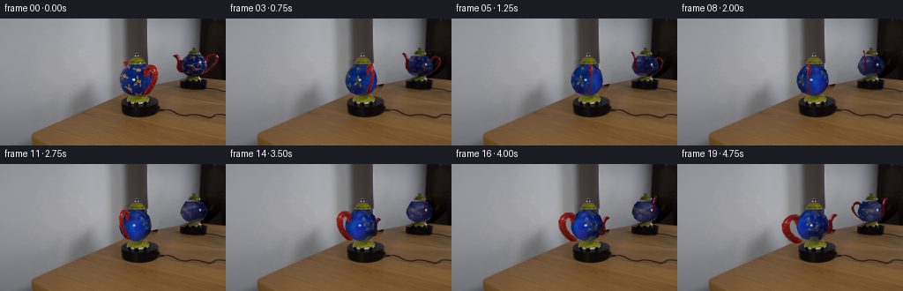
展开代码变化
--- 上一保存版本
+++ 本次保存版本
@@ -32,7 +32,7 @@
# Recover unobstructed wall and table from the nearby stationary photograph.
col=np.mean(original[23:30],axis=0).astype(np.float32)
wall=np.repeat(cv2.resize(col[None],(W,1),interpolation=cv2.INTER_LINEAR),H,axis=0)
-wall-=np.maximum(Y-26,0)[...,None]*np.where(X[...,None]<140,.14,np.where(X[...,None]<168,.12,.68))
+wall-=np.maximum(Y-26,0)[...,None]*np.where(X[...,None]<140,.14,np.where(X[...,None]<168,.12,np.where(X[...,None]<227,.68,.15)))
# The dark frame of the mirror continues vertically behind the moving object.
wall=np.clip(wall,0,255)
lookup_y=np.clip(Y+np.where(X<190,4,10),0,143).astype(np.float32)
@@ -65,6 +65,10 @@
bad|=(original.min(axis=2)>115)&small
tex=cv2.inpaint(original,np.uint8(bad)*255,3,cv2.INPAINT_TELEA).astype(np.float32)
small=cv2.erode(np.uint8(small),np.ones((3,3),np.uint8)).astype(bool)
+ ygrid,xgrid=np.mgrid[:144,:256]
+ small&=(ygrid>=int(cy-ry+.14*ry))&(ygrid<=int(cy+ry-.14*ry))
+ near_edge=distance_transform_edt(small)<2
+ small&=~(near_edge&((original[:,:,2]<original[:,:,0]*1.15)|(original[:,:,2]<original[:,:,1]*1.08)))
nearest=distance_transform_edt(~small,return_distances=False,return_indices=True)
tex=tex[nearest[0],nearest[1]]
yy,xx=np.mgrid[:144,:256]
候选 09播放与检查图
可观测工具轨迹
实际执行的命令与返回图片。
命令 1exit 0
/bin/bash -lc "ls -la && cat prompt.txt && printf '\\n---RULES---\\n' && cat GENERATION_RULES.md"
命令 2exit 0
/bin/bash -lc "cat artifact_io.py && python - <<'PY'
from PIL import Image
im=Image.open('first_frame.png'); print(im.size); im.resize((1024,576)).save('.tmp/enlarged.png')
PY"命令 3exit 0
/bin/bash -lc "python - <<'PY'
import numpy as np
from PIL import Image
im=Image.open('first_frame.png')
im.crop((128,32,185,113)).resize((456,648)).save('.tmp/main.png')
im.crop((190,27,253,86)).resize((504,472)).save('.tmp/mirror.png')
import scipy;print(scipy.__version__)
PY"命令 4exit 0
/bin/bash -lc "python - <<'PY' import importlib.util for x in ['numba','cv2']: print(x,importlib.util.find_spec(x)) PY"
命令 5exit 0
/bin/bash -lc "python - <<'PY'
from PIL import Image
im=Image.open('first_frame.png')
for y in [20,35,45,60,75,85,95]:
print(y, [im.getpixel((x,y)) for x in [133,140,145,155,164,166,169,177,184,199,220,227,240,250]])
PY"命令 6exit 0
/bin/bash -lc "python - <<'PY'
from PIL import Image,ImageDraw
im=Image.open('first_frame.png').resize((1024,576))
d=ImageDraw.Draw(im)
for x in range(130,186,5):d.line((x*4,120,x*4,416),fill=(180,180,180),width=1);d.text((x*4,420),str(x),fill='white')
for y in range(30,106,5):d.line((512,y*4,746,y*4),fill=(180,180,180),width=1);d.text((750,y*4),str(y),fill='white')
im.save('.tmp/grid.png')
PY"命令 7exit 0
/bin/bash -lc "cat > generate.py <<'PY'
from pathlib import Path
import numpy as np
from PIL import Image, ImageDraw, ImageFilter
import cv2
from scipy.ndimage import distance_transform_edt, gaussian_filter
import artifact_io
ROOT=Path(__file__).resolve().parent
S=4
W,H=256*S,144*S
original=np.array(Image.open(ROOT/'first_frame.png').convert('RGB'))
im=cv2.resize(original,(W,H),interpolation=cv2.INTER_CUBIC).astype(np.float32)
Y,X=np.mgrid[0:H,0:W].astype(np.float32); X=(X+.5)/S-.5;Y=(Y+.5)/S-.5
E=np.deg2rad(19); OFF=np.deg2rad(145)
def poly(points):
a=Image.new('L',(W,H));ImageDraw.Draw(a).polygon([(int((x+.5)*S),int((y+.5)*S)) for x,y in points], fill=255)
return np.array(a,dtype=np.float32)/255
mainbody=poly([(146,51),(162,51),(164,54),(168,58),(170,63),(171,70),(170,76),(166,82),(161,86),(155,87),(148,86),(141,83),(137,78),(135.2,72),(135.3,66),(137,61),(141,56)])
refbody=poly([(210,42),(228,42),(232,46),(235,52),(234,58),(230,63),(224,65),(217,66),(211,64),(207,61),(204,55),(205,50),(208,45)])
# Visible accessory silhouettes, taken exclusively from the input photograph.
mhandle=poly([(161.5,60),(162.5,56),(165,53),(168,51.8),(172.5,52.1),(176.3,55.4),(178.5,60),(178.2,68),(175.8,75),(172.8,80),(167.6,85),(163.4,86),(162.5,83.5),(166.3,78),(169.8,72),(171,65),(170,60),(168.5,58),(168,62),(166.5,65),(163.2,65.4)])
mspout=poly([(140.2,48.3),(145,47.3),(148,48.1),(148,52),(145.2,54.5),(142.5,54),(142,51.5)])
rhandle=poly([(232.1,47),(233.5,43),(237,40),(240,39),(244,40),(247,42.5),(247.8,46),(246,51.5),(242.7,56),(238,60),(232,64),(229,65),(228.5,63),(233.5,59.5),(238,56),(242,52),(244.5,46.5),(244,43.5),(241.5,42),(239,43),(236,46),(235,50)])
rspout=poly([(196.2,41.7),(199,40.6),(202.4,42),(204.3,45),(206,49),(209,51),(210,57),(208,61),(204,61),(201.2,58),(200.8,53),(201.5,49),(199.7,44.8)])
# Remove residual background colors from accessory masks by red chroma.
red=np.clip((im[:,:,0]-np.maximum(im[:,:,1],im[:,:,2])-13)/19,0,1)
mhandle*=red;mspout*=red;rhandle*=red;rspout*=red
# Recover unobstructed wall and table from the nearby stationary photograph.
col=np.mean(original[23:30],axis=0).astype(np.float32)
wall=np.repeat(cv2.resize(col[None],(W,1),interpolation=cv2.INTER_LINEAR),H,axis=0)
wall-=np.maximum(Y-26,0)[...,None]*np.where(X[...,None]<140,.14,np.where(X[...,None]<168,.12,.30))
# The dark frame of the mirror continues vertically behind the moving object.
wall=np.clip(wall,0,255)
lookup_y=np.clip(Y+25,0,143).astype(np.float32)
table=cv2.remap(original.astype(np.float32),X.astype(np.float32),lookup_y,cv2.INTER_LINEAR,borderMode=cv2.BORDER_REPLICATE)
# Adjust table sampling to match the slightly lighter wood at the rear of the desk.
table*=.94
line=np.where(X<167,126.2-.300*X,np.where(X<227,113.6-.225*X,64.5+.02*X))
a=np.clip((Y-line+.4)/.8,0,1)[...,None]
clean=wall*(1-a)+table*a
# Keep the turntable, the base, the lid and the mirror itself absolutely still.
remove=np.clip(mainbody+refbody+mhandle+mspout+rhandle+rspout,0,1)
remove=cv2.dilate(remove,np.ones((7,7),np.uint8))
remove=gaussian_filter(remove,.6)
bg=im*(1-remove[...,None])+clean*remove[...,None]
def texture(mask,accessory,cx,cy,rx,ry):
small=cv2.resize(mask,(256,144),interpolation=cv2.INTER_AREA)>.35
bad=(cv2.resize(accessory,(256,144),interpolation=cv2.INTER_AREA)>.1)&small
# Gloss reflections belong to the room, not to the painted rotating surface.
bad|=(original.min(axis=2)>115)&small
tex=cv2.inpaint(original,np.uint8(bad)*255,3,cv2.INPAINT_TELEA).astype(np.float32)
nearest=distance_transform_edt(~small,return_distances=False,return_indices=True)
tex=tex[nearest[0],nearest[1]]
yy,xx=np.mgrid[:144,:256]
nx=(xx-cx)/rx; ny=(cy-yy)/ry
depth=np.sqrt(np.maximum(0,1-nx*nx-ny*ny))
shade=np.clip(.70+.30*depth-.10*nx,.46,1.08)
tex/=shade[...,None]
return tex
mt=texture(mainbody,mhandle,153.5,69.4,18,18)
rt=texture(refbody,rhandle+rspout,219.8,53.7,15.5,14.2)
rt*=np.array([1.18,1.40,1.46])
def sample(tex,u,v):
return cv2.remap(tex,u.astype(np.float32),v.astype(np.float32),cv2.INTER_LINEAR,borderMode=cv2.BORDER_REPLICATE)
def body(cx,cy,rx,ry,mask,ang,isref):
nx=(X-cx)/rx; yy=(cy-Y)/ry
dc=np.sqrt(np.maximum(0,1-nx*nx-yy*yy))
zw=yy*np.cos(E)+dc*np.sin(E)
dw=dc*np.cos(E)-yy*np.sin(E)
lon=np.arctan2(nx,dw)
world=OFF-lon+ang if isref else lon+ang
radius=np.sqrt(np.maximum(0,1-zw*zw))
lm=world; lr=OFF-world
def uv(theta,cx,cy,rx,ry):
return cx+rx*radius*np.sin(theta),cy-ry*(zw*np.cos(E)-radius*np.cos(theta)*np.sin(E))
um,vm=uv(lm,153.5,69.4,18,18)
ur,vr=uv(lr,219.8,53.7,15.5,14.2)
a=sample(mt,um,vm); b=sample(rt,ur,vr)
wm=np.maximum(.035,np.cos(lm))**4;wr=np.maximum(.035,np.cos(lr))**4
color=(a*wm[...,None]+b*wr[...,None])/(wm+wr)[...,None]
shade=np.clip(.70+.30*dc-.10*nx,.46,1.08)
color*=shade[...,None]
if isref:color/=np.array([1.18,1.40,1.46])
# The small, room-fixed white specular spot remains in place as the glaze turns.
if isref:
highlight=np.exp(-(((X-226.6)/.85)**4+((Y-51.7)/1.1)**4)/2)*.8
else:
highlight=np.exp(-(((X-151.6)/1.15)**4+((Y-69.1)/.9)**4)/2)*.94
color=color*(1-highlight[...,None])+np.array([234,234,234])*highlight[...,None]
return color,mask,dc*rx
def accessory(srcmask,cx,cy,theta0,theta,scale=1,origin=None):
# Inverse-project the source accessory into its vertical radial plane.
# Finite ceramic thickness keeps the handle visible when its plane is edge-on.
if origin is None: origin=(cx,cy)
scx,scy=origin
s0=np.sin(theta0); st=np.sin(theta)
k=st/s0*scale
if abs(k)<.085: k=np.copysign(.085,k if k else 1)
u=scx+(X-cx)/k
radial=(u-scx)/s0
v=scy+(Y-cy)/scale-radial*(np.cos(theta0)-np.cos(theta))*np.sin(E)
srcu=(u+.5)*S-.5;srcv=(v+.5)*S-.5
alpha=sample(srcmask,srcu,srcv)
color=sample(im,srcu,srcv)
# Correct for the change of light on the red ceramic, retaining photographic details.
gain=.93+.12*np.cos(theta-.3)
color=color*gain
depth=radial*np.cos(theta)*scale+1.3*scale
return color,alpha,depth
def render(angle,i):
a=np.deg2rad(angle)
out=bg.copy()
# Opaque, depth-sorted teapot parts in each of the two optical views.
for ref,cx,cy,rx,ry,mask in [(False,153.5,69.4,18,18,mainbody),(True,219.8,53.7,15.5,14.2,refbody)]:
color,ba,bd=body(cx,cy,rx,ry,mask,a,ref)
parts=[(color,ba,bd)]
if not ref:
theta=np.deg2rad(45)-a
parts.append(accessory(mhandle,cx,cy,np.deg2rad(45),theta))
# The complete spout is reconstructed from the unobstructed mirrored view.
sp=accessory(rspout,cx,cy,np.deg2rad(-80),theta+np.pi,18/15.5,(219.8,53.7))
sp=(sp[0]*np.array([1.16,1.14,1.08]),sp[1],sp[2])
parts.append(sp)
else:
theta=np.deg2rad(100)+a
parts.append(accessory(rhandle,cx,cy,np.deg2rad(100),theta))
parts.append(accessory(rspout,cx,cy,np.deg2rad(-80),theta-np.pi))
# Render body first, then accessory with camera-depth occlusion.
out=out*(1-ba[...,None])+color*ba[...,None]
for pc,pa,pd in parts[1:]:
vis=np.clip((pd-bd+.15)*2,0,1)
alpha=pa*(1-ba+ba*vis)
out=out*(1-alpha[...,None])+pc*alpha[...,None]
# Overlay invariant lid/foot pixels after any body-edge reconstruction.
keep=poly([(149,38),(160,38),(160,43),(165,48),(165,50.9),(145,50.9),(145,47),(149,43)])
keep+=poly([(145,87),(163,87),(168,92.5),(167,94.5),(145,95),(143,92.5)])
keep+=poly([(216,32),(222,32),(222,35.5),(228,39),(230,42),(206,42),(208,38),(216,35.5)])
keep+=poly([(214,66),(225,66),(229,69),(228,71),(210,71),(209,69)])
keep=np.clip(keep,0,1)
# Only reinstate the actual ceramic, avoiding the small surrounding background.
ceramic=((im[:,:,1]>im[:,:,2]*1.25)&(im[:,:,0]>im[:,:,2]*1.15))|((Y<44)&(X>151)&(X<159))|((Y<37)&(X>217)&(X<222))
keep*=ceramic
out=out*(1-keep[...,None])+im*keep[...,None]
# Short continuity bridge from the exact observed first frame to the 3-D surface.
if i<3:
t=i/3
out=out*t+im*(1-t)
return np.uint8(np.clip(cv2.resize(out,(256,144),interpolation=cv2.INTER_AREA),0,255))
frames=[original]
for i in range(1,20):
frames.append(render(i*7.0,i))
frames=np.stack(frames).astype(np.uint8)
artifact_io.save(frames,ROOT)
PY
python generate.py"命令 8exit 0
/bin/bash -lc "python - <<'PY'
from PIL import Image
Image.open('frames/11.png').resize((1024,576)).save('.tmp/f11.png')
PY"命令 9exit 0
/bin/bash -lc "python - <<'PY'
import generate as g
from PIL import Image
import numpy as np,cv2
Image.fromarray(np.uint8(cv2.resize(g.bg,(256,144)))).resize((1024,576)).save('.tmp/bg.png')
for x,y in [(174,60),(177,60),(175,72),(177,75),(164,82),(166,80),(207,54),(234,57)]:
print(x,y, g.original[y,x],g.wall[y*4,x*4],g.bg[y*4,x*4],g.line[y*4,x*4])
PY"命令 10exit 0
/bin/bash -lc "python - <<'PY'
p='generate.py'
s=open(p).read().replace(\".12,.30))\", \".12,.68))\")
s=s.replace(\"lookup_y=np.clip(Y+25,0,143).astype(np.float32)\\ntable=cv2.remap(original.astype(np.float32),X.astype(np.float32),lookup_y,cv2.INTER_LINEAR,borderMode=cv2.BORDER_REPLICATE)\",\"lookup_y=np.clip(Y+np.where(X<190,4,10),0,143).astype(np.float32)\\nlookup_x=np.clip(X+np.where(X<190,43,35),0,252).astype(np.float32)\\ntable=cv2.remap(original.astype(np.float32),lookup_x,lookup_y,cv2.INTER_LINEAR,borderMode=cv2.BORDER_REPLICATE)\")
s=s.replace('table*=.94','table*=1.00')
s=s.replace(\"bad=(cv2.resize(accessory,(256,144),interpolation=cv2.INTER_AREA)>.1)&small\", \"bad=(cv2.resize(accessory,(256,144),interpolation=cv2.INTER_AREA)>.1)&small\\n bad |= (original[:,:,0]>original[:,:,1]*1.8)&(original[:,:,0]>original[:,:,2]*1.5)&small\\n bad=cv2.dilate(np.uint8(bad),np.ones((3,3),np.uint8)).astype(bool)\")
open(p,'w').write(s)
PY
python generate.py"命令 11exit 0
/bin/bash -lc "python - <<'PY'
from PIL import Image
Image.open('frames/14.png').resize((1024,576)).save('.tmp/f14.png')
PY"命令 12exit 0
/bin/bash -lc "python - <<'PY'
p='generate.py'
s=open(p).read()
s=s.replace('red=np.clip(', 'rawaccess=np.clip(mhandle+mspout+rhandle+rspout,0,1)\\nred=np.clip(')
s=s.replace('remove=np.clip(mainbody+refbody+mhandle+mspout+rhandle+rspout,0,1)', 'remove=np.clip(mainbody+refbody+rawaccess,0,1)')
s=s.replace(\"bad |= (original[:,:,0]>original[:,:,1]*1.8)&(original[:,:,0]>original[:,:,2]*1.5)&small\", \"bad |= (original[:,:,0]>original[:,:,1]*1.8)&(original[:,:,0]>original[:,:,2]*1.5)&small\\n edge=distance_transform_edt(small)<2.5\\n bad|=edge&small&((original[:,:,2]<original[:,:,0]*1.2)|(original[:,:,2]<original[:,:,1]*1.12))\")
s=s.replace(\"tex=tex[nearest[0],nearest[1]]\", \"tex=tex[nearest[0],nearest[1]]\")
s=s.replace(\"artifact_io.save(frames,ROOT)\",\"artifact_io.save(frames,ROOT)\\nImage.fromarray(np.uint8(np.clip(mt,0,255))).save(ROOT/'.tmp/mt.png')\\nImage.fromarray(np.uint8(np.clip(rt,0,255))).save(ROOT/'.tmp/rt.png')\\nImage.fromarray(np.uint8(np.clip(cv2.resize(bg,(256,144)),0,255))).save(ROOT/'.tmp/bg.png')\")
open(p,'w').write(s)
PY
python generate.py"命令 13exit 0
/bin/bash -lc "python - <<'PY'
from PIL import Image
im=Image.new('RGB',(1024,576))
im.paste(Image.open('.tmp/mt.png').resize((1024,576)),(0,0))
im.save('.tmp/mt_large.png')
im=Image.open('.tmp/rt.png').crop((198,35,240,68)).resize((630,495));im.save('.tmp/rt_large.png')
Image.open('.tmp/bg.png').resize((1024,576)).save('.tmp/bg_large.png')
PY"命令 14exit 0
/bin/bash -lc "python - <<'PY' p='generate.py';s=open(p).read() s=s.replace(\"bad |= (original[:,:,0]>original[:,:,1]*1.8)&(original[:,:,0]>original[:,:,2]*1.5)&small\", \"bad |= (original[:,:,0]>original[:,:,1]*1.8)&(original[:,:,0]>original[:,:,2]*1.5)&small\\n bad|=((original[:,:,0]>original[:,:,2]*1.25)&(original[:,:,0]>original[:,:,1]*1.25))&small\") s=s.replace(\"nearest=distance_transform_edt(~small,return_distances=False,return_indices=True)\",\"small=cv2.erode(np.uint8(small),np.ones((3,3),np.uint8)).astype(bool)\\n nearest=distance_transform_edt(~small,return_distances=False,return_indices=True)\") open(p,'w').write(s) PY python generate.py"
命令 15exit 0
/bin/bash -lc "python - <<'PY'
from PIL import Image
Image.open('frames/14.png').resize((1024,576)).save('.tmp/f14b.png')
PY"命令 16exit 0
/bin/bash -lc "python - <<'PY'
from PIL import Image
Image.open('.tmp/bg.png').resize((1024,576)).save('.tmp/bg_large.png')
PY"命令 17exit 0
/bin/bash -lc "python - <<'PY'
p='generate.py';s=open(p).read()
s=s.replace('np.ones((7,7),np.uint8)', 'np.ones((15,15),np.uint8)')
s=s.replace('remove=gaussian_filter(remove,.6)', \"extra=poly([(234,38),(244,38),(249,42),(249,48),(246,54),(240,59),(235,61),(231,62),(233,58),(241,53),(245,47),(244,43),(240,42),(237,45),(235,50)])\\nextra=cv2.dilate(extra,np.ones((9,9),np.uint8))\\nremove=np.clip(remove+extra,0,1)\\nremove=gaussian_filter(remove,.6)\")
# Inpaint takes values outside the mask as fixed boundary colors; clear accessory colors there too.
s=s.replace('bad=(cv2.resize(accessory,(256,144),interpolation=cv2.INTER_AREA)>.1)&small', 'bad=(cv2.resize(accessory,(256,144),interpolation=cv2.INTER_AREA)>.03)')
s=s.replace(\"bad|=((original[:,:,0]>original[:,:,2]*1.25)&(original[:,:,0]>original[:,:,1]*1.25))&small\", \"bad|=((original[:,:,0]>original[:,:,2]*1.20)&(original[:,:,0]>original[:,:,1]*1.25))&cv2.dilate(np.uint8(small),np.ones((5,5),np.uint8)).astype(bool)\")
open(p,'w').write(s)
PY
python generate.py"命令 18exit 0
/bin/bash -lc "python - <<'PY'
from PIL import Image
Image.open('frames/14.png').resize((1024,576)).save('.tmp/f14c.png')
Image.open('.tmp/rt.png').crop((198,35,240,68)).resize((630,495)).save('.tmp/rt_large.png')
PY"命令 19exit 0
/bin/bash -lc "python - <<'PY'
p='generate.py';s=open(p).read()
s=s.replace(\".12,.68))\", \".12,np.where(X[...,None]<227,.68,.15)))\")
s=s.replace('small=cv2.erode(np.uint8(small),np.ones((3,3),np.uint8)).astype(bool)', \"small=cv2.erode(np.uint8(small),np.ones((3,3),np.uint8)).astype(bool)\\n ygrid,xgrid=np.mgrid[:144,:256]\\n small&=(ygrid>=int(cy-ry+.14*ry))&(ygrid<=int(cy+ry-.14*ry))\\n near_edge=distance_transform_edt(small)<2\\n small&=~(near_edge&((original[:,:,2]<original[:,:,0]*1.15)|(original[:,:,2]<original[:,:,1]*1.08)))\")
open(p,'w').write(s)
PY
python generate.py"视觉工具实际返回图片 1

视觉工具实际返回图片 2
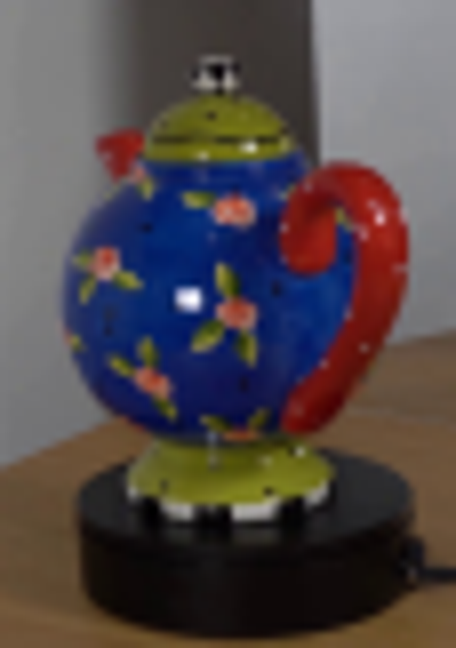
视觉工具实际返回图片 3
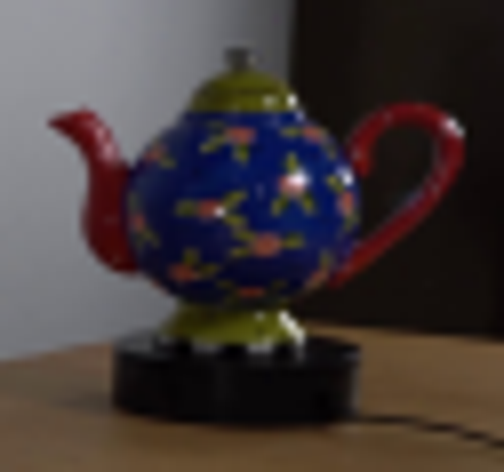
视觉工具实际返回图片 4
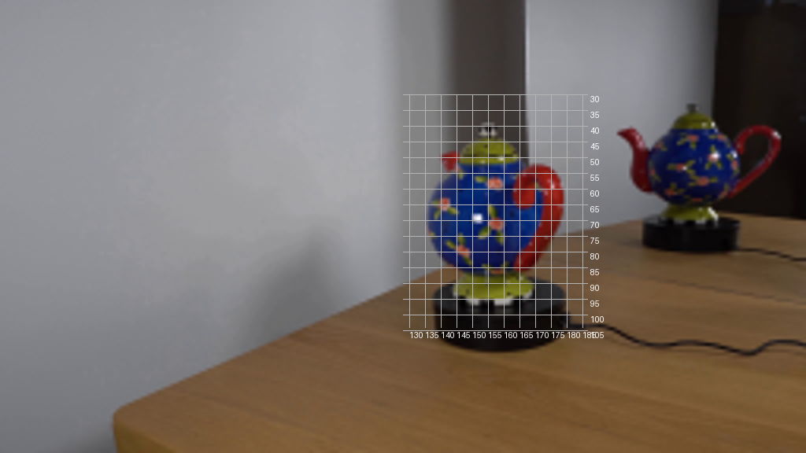
视觉工具实际返回图片 5
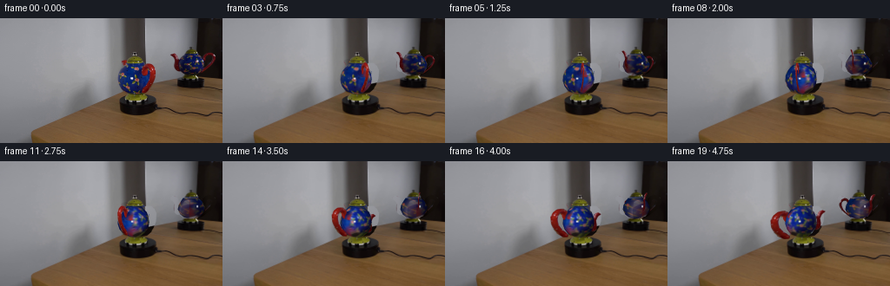
视觉工具实际返回图片 6
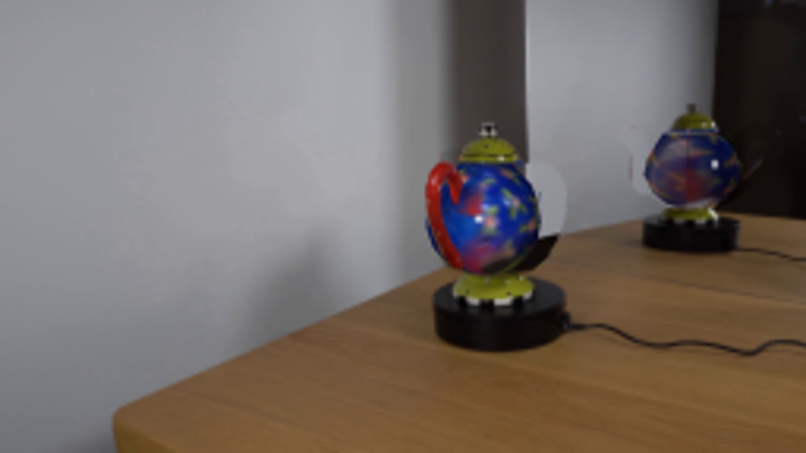
视觉工具实际返回图片 7
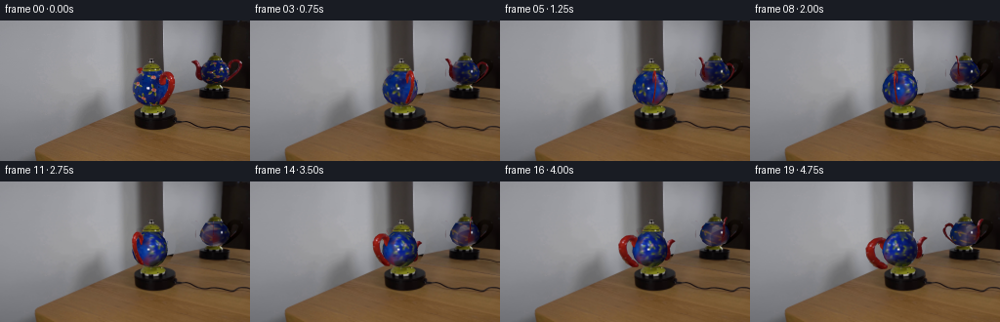
视觉工具实际返回图片 8
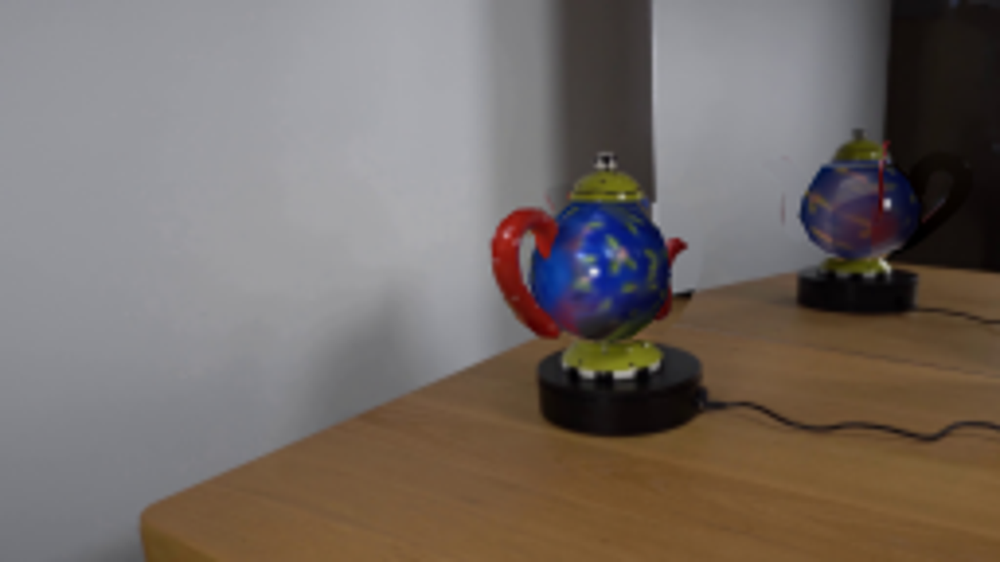
视觉工具实际返回图片 9
视觉工具实际返回图片 10

视觉工具实际返回图片 11
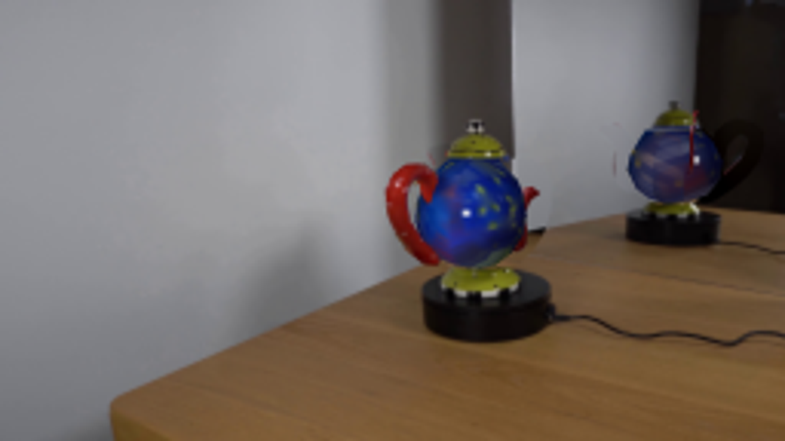
视觉工具实际返回图片 12
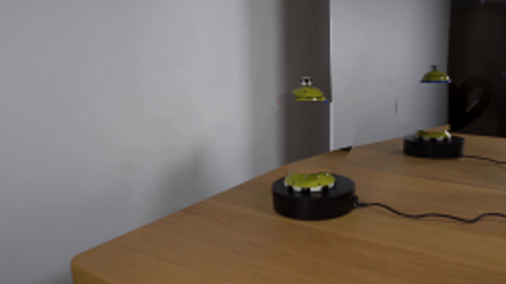
视觉工具实际返回图片 13

视觉工具实际返回图片 14
视觉工具实际返回图片 15
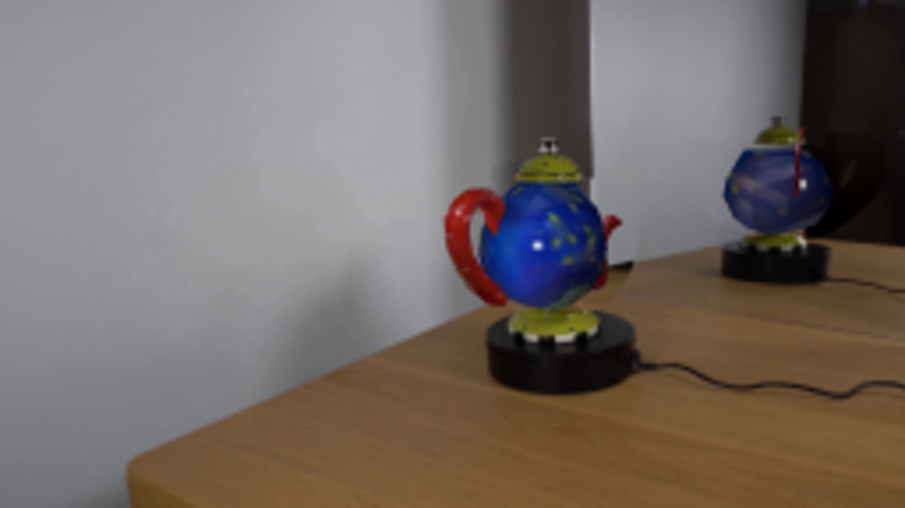
保存候选 9 份；完成命令 19 次；可验证图片返回 15 张。原始 API 响应与完整日志保留在本地。